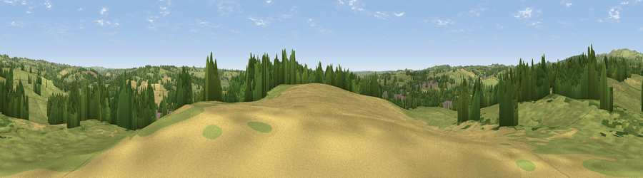

Viewpoint near Denstone
#30277 in England · top 47% of its area beats it · near DenstoneThe view, rendered

A 360° render of this exact spot computed from the terrain model, tree cover and land cover — summer colours, afternoon light, calibrated against photographs of famous viewpoints. Real trees, hedges and buildings will differ in detail.
The panorama
Grey silhouette: terrain skyline in each direction (720 bearings, Earth curvature and refraction included). Dashed green: skyline with trees (+15 m) and buildings (+8 m) as obstacles. Blue strip: how far the ground is visible on each bearing.
Where the view opens
Wedge length = distance to the farthest visible ground on that bearing (vegetation-aware). Rings at 10, 25 and 50 km.
What fills the view
57% grassland · 23% woodland · 19% cropland · 2% built-up
Angular shares of the visible panorama (visual magnitude), not map area. Landscape diversity 0.46 (0–1 Shannon).
Key numbers
More beautiful places nearby
The staircase of upgrades: each row has a higher view potential than everything closer. Driving times are estimates from straight-line distance, calibrated against real road routing — check an actual route before setting out.
| Place | Direction | Drive | Score |
|---|---|---|---|
| Viewpoint near Wootton | NNW · 3 km | ~8 min | 52.3 |
| Viewpoint near Wootton | NNW · 4 km | ~9 min | 53.5 |
| Viewpoint near Wootton | N · 4 km | ~10 min | 66.1 |
| Viewpoint near Wootton | N · 5 km | ~10 min | 74.4 |
| Viewpoint near Wootton | NNW · 5 km | ~11 min | 74.8 |
| Tissington Hill | NNE · 12 km | ~22 min | 75.5 |
| Viewpoint near Mow Cop | WNW · 30 km | ~46 min | 80.2 |
| Viewpoint near Little Wenlock | SW · 58 km | ~80 min | 84.2 |
52.97187, -1.83951 · source: screening · position refined by local search. Computed location — check access rights before visiting.